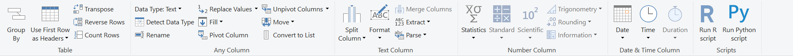
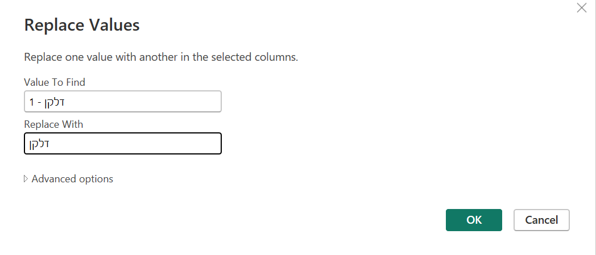
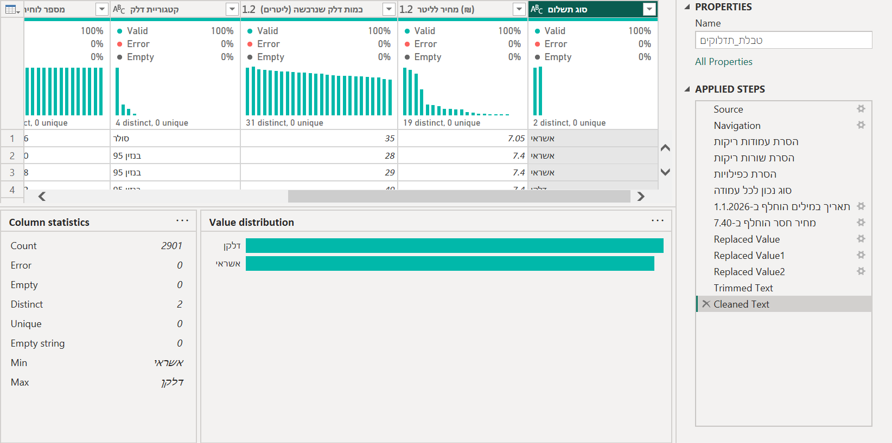
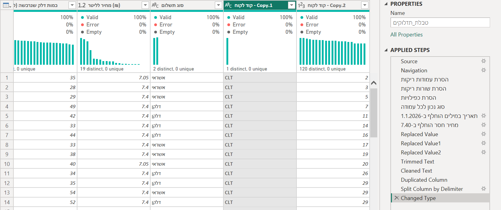
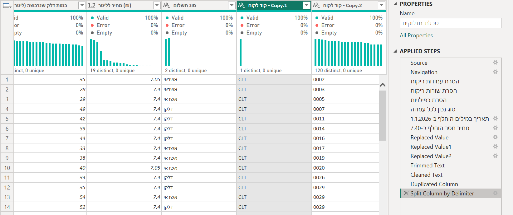
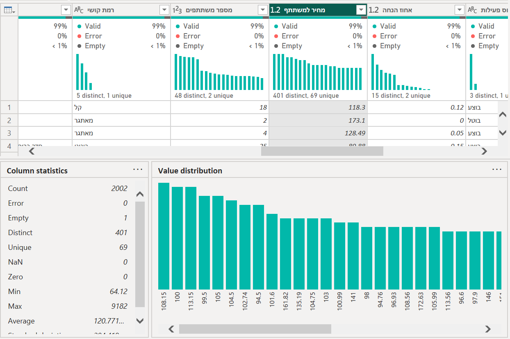
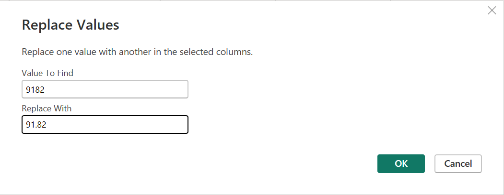
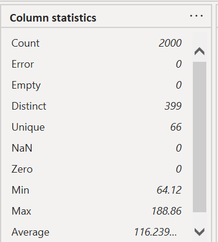
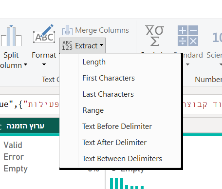
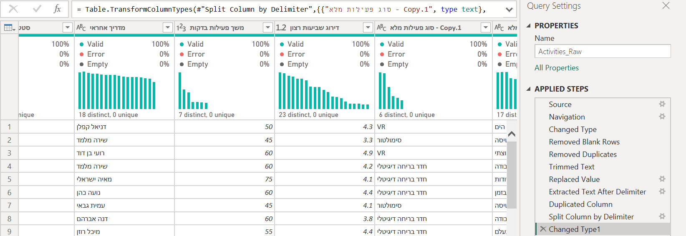

שגיאות ושורות ריקות צועקות. היום מחפשות את הבעיות ששותקות: מספר שלא הגיוני, מילה עם רווח מיותר, קוד שמאבד אפסים.
פאוור BI לא יסמן אותן כשגיאה. רק השאלה ״זה הגיוני?״ תמצא אותן.
שאלה
←
איסוף נתונים
←
טיוב והכנה
←
ניתוח
←
הצגה
←
החלטה
לא היית במיט?
עברי על שלבים 0–1 עם ההקלטה, ואחר כך עשי את כרטיס החדר לבד. הכרטיס עומד בפני עצמו: קובץ חדש, בלי תלות בשבועות הקודמים.
עונות בצ׳אט על שלוש שאלות, ובודקות את עצמכן מול התשובה.
מספר השאלה, ותשובה במשפט אחד. רק אחר כך פותחות את התשובה.
מה צריך להיות כתוב בשורת תיעוד, כדי שתהיה ראיה?
תשובה
ארבעה דברים: איזה כלי, על מה (איזו עמודה), איזה מספר, ומה עשיתן.
״אין כפילויות״ זה משפט. ״על קוד תדלוק מצאתי ארבעה כפולים ומחקתי״ זו ראיה.
למה מוחקות שורות ריקות לפני שבודקות כפולים?
תשובה
שתי שורות ריקות הן ״כפולות״ זו של זו. אקסל ימחק אחת מהן, ויראה 5 כפולים ו־2,902 שורות במקום 4 ו־2,901. בפאוור קוורי הריק נספר כעוד ערך, ו־Distinct יוצא גבוה באחד.
תדלוק של 50,000 ליטר. מוחקות את השורה?
תשובה
לא בהכרח. 50,000 הוא כנראה 50 עם אפסים מיותרים, ושאר השורה תקינה, ולכן מתקנות ולא מוחקות: Transform › Replace Values, 50000 ← 50, ונותנות לשלב שם בעברית. בטבלת התיעוד כותבות למה.
Max יורד ל־55, והממוצע ל־39.76.
עוד לא תיקנת? תקני עכשיו, בקובץ התדלוק שלך. שיעור 6 ממשיך ממנו.
✔ זוכרות מה בודקים ואיך כותבים. היום: בעיות שלא צועקות. לשלב 0 ←
שלב 0 · לפני שנכנסותשלוש בעיות ששותקות, שלושה כלים
יודעות, לכל בעיה שקטה, באיזה כלי מוצאים אותה.
אף אחת מהן לא תופיע כ־Error. כל אחת נראית בכלי אחר בפרופיל.
מספר שלא הגיוני ← Min ו־Maxתדלוק של 50,000 ליטר. הוא מספר תקין, אבל לא הגיוני. שואלות ״זה אפשרי?״.
מילה שנראית אותו דבר ← Value distribution״עסקי״ ו״עסקי ״. בעיניים זה אותו דבר, אבל למחשב אלה שתי קטגוריות.
קוד שמאבד אפסים ← האייקון בכותרת0002 שהפך ל־2. אם האייקון הוא 123 ולא ABC, האפסים כבר נעלמו.
שגיאות קודם. לפני שמחפשות בעיות עדינות, בודקות שמעל כל עמודה כתוב Error 0%.
שגיאות נוצרות כשמשנים סוג, ושגיאה שנשארת עלולה לתקוע את השלבים שאחריה. את זה עשינו בשיעור 3, ולכן מתחילות מקובץ נקי משגיאות.
קודם מסמנות עמודה, ואז בוחרות פקודה. הלשונית Transform מחולקת לקבוצות לפי סוג העמודה:
Any Column, Text Column, Number Column, Date & Time Column.
פקודת טקסט על עמודת מספרים לא תעבוד, ולכן מסתכלות קודם על האייקון. בשיעור 6 נראה שגם בלשונית Add Column יש אותן קבוצות.

מסומנת עמודת טקסט, ולכן רוב הכלים של Number Column אפורים.
פאוור קוורי פתוח על התדלוק, עם פרופיל על כל הנתונים ובלי שגיאות.
איך עושים
פותחות את קובץ התדלוק שלכן (תדלוק.pbix, משיעור 3). Home › Transform data.
למטה משמאל: entire data set. זה חוזר ל־1,000 בכל פתיחה.
עוברות על הכותרות: מעל כל עמודה Error 0%?
לא שמרתי את קובץ התדלוק, או פתחתי קובץ אחר
בהדגמה עושות יחד איתי, ואם אין קובץ פשוט מסתכלות. כרטיס החדר מתחיל מקובץ חדש, ולא צריך בו את התדלוק.
אחרי השיעור: שלב 1 בשיעור 3 מסביר איך לבנות את הקובץ מחדש.
1.2טקסט מלוכלך
בסוג התשלום נשארו בדיוק שני ערכים, בלי מספרים.
איך עושים
בעמודת סוג התשלום כתוב 1 - דלקן ו־2 - אשראי. מסמנות את העמודה, וקליק על תא עם 1 - דלקן.
Transform › Replace Values. הערך נכנס לבד לשדה הראשון, עם הרווחים המדויקים. בשדה השני: דלקן.

אותו דבר ל־2 - אשראי.
רווחים מיותרים בתחילת הטקסט או בסופו: Transform › Format › Trim. תווים נסתרים: Clean.
מה אמור להופיע?
ב־Value distribution של סוג התשלום שני ערכים בלבד: דלקן ואשראי.

למה קליק על תא ולא להקליד? גם הקלדה עובדת, אבל רק אם מקלידים בדיוק כמו בתא, כולל כל רווח. הקליק לא טועה.
למה ״עסקי״ ו״עסקי ״ הן שתי קטגוריות? בעיניים הן זהות. למחשב הן שתי מילים שונות, כי באחת יש רווח בסוף.
גרף לפי סוג לקוח יציג שתי עמודות ״עסקי״. בחדר תמצאו בדיוק את זה.
Trim כאן הוא לא TRIM של אקסל. הוא מוריד רווחים רק בהתחלה ובסוף.
שני רווחים באמצע הטקסט נשארים שניים.
1.3לפצל עמודה, והמלכודת
קוד הלקוח פוצל בעותק, והאפסים בהתחלה נשארו.
איך עושים
רשת ביטחון: קודם משכפלות את העמודה. Add Column › Duplicate Column. עובדות על העותק, והמקור נשאר.
על העותק של קוד הלקוח (CLT-0002): Transform › Split Column › By Delimiter, והמפריד -.
מסתכלות על היומן: נוסף לבד שלב Changed Type. הוא החליט ש־0002 הוא מספר, והפך אותו ל־2.

האייקון 123, והאפסים נעלמו.
מוחקות את ה־Changed Type שנוסף לבד (ה־X שלידו). האפסים חוזרים.
מה אמור להופיע?
בשתי העמודות החדשות האייקון ABC, ובשנייה 0002 ולא 2.

המלכודת: Changed Type שנוסף לבד. אחרי Split, ולפעמים אחרי פעולות אחרות, פאוור BI מוסיף שלב שמנחש סוגים.
בקודים (תעודת זהות, מיקוד, טלפון) הניחוש הורס את הנתונים. ולהחזיר ל־Text אחר כך לא עוזר: האפסים כבר נמחקו. רק מחיקת השלב מחזירה אותם.
אחרי כל עמודה חדשה, בודקות את האייקון בכותרת.
Split או Extract?Split מפרק עמודה לכמה עמודות. Extract שומר רק חלק אחד.
כשצריך רק את מה שאחרי המקף, Transform › Extract › Text After Delimiter קצר יותר.
אותו מהלך נותן קטגוריית־על. ״בנזין 95״ ו״בנזין 98״ הן שתי קטגוריות, אבל לשאלה ״בנזין או סולר?״ מספיקה המילה הראשונה.
משכפלות, מפצלות ברווח, ומוחקות את החלק עם המספר. בחדר תעשו בדיוק את זה על סוגי הפעילות.
דוח חדש: File › New. ואז Home › Get data › Excel workbook ← נתוני פעילות VR - לתרגול.xlsx.
ב־Navigator מסמנות את Activities_Raw, ולוחצות Transform Data.
בלשונית View שלוש התיבות. למטה: entire data set.
2.2ציד, ורושמות
ארבע שורות בטבלת התיעוד, אחת לכל בעיה. עוד בלי לתקן.
איך עושים
שגיאות קודם: מעל כל עמודה Error 0%? אם יש שגיאה, מטפלות בה קודם, כמו בשיעור 3.
לוחצות על כותרות, ומחפשות ארבע בעיות. רמזים:
קוד פעילות — Distinct מול Unique.
מחיר למשתתף — Min מול Max. זה הגיוני?
סוג לקוח — כמה ערכים יש ב־Value distribution?
והרביעית היא מהסוג שכבר מכירות.
רושמות את ארבע הבעיות בטבלת התיעוד: עמודה, הבעיה, איך גיליתי.
מה אמור להופיע? (לפתוח רק אחרי שחיפשתן)
קוד פעילות: 2001 distinct, 2000 unique. פעילות אחת רשומה פעמיים.
מחיר למשתתף:Count 2002, Empty 1 (הנה הרביעית: שורה ריקה), Min 64.12 ו־Max9182.
סוג לקוח: ״עסקי״ מופיע פעמיים בגרף.

9,182 ₪ למשתתף, כשכל השאר בין 64 ל־189. כנראה 91.82, והנקודה נשמטה.״עסקי״ פעמיים: בשורה האחרונה יש רווח בסוף המילה.
🔄 מתחלפות: הנהגת מפסיקה לשתף, והשנייה משתפת את המסך שלה.
2.3מתקנות את הארבע
בסוג לקוח ארבעה ערכים, ובמחיר למשתתף אין יותר חריג.
איך עושים
Home › Remove Rows › Remove Blank Rows.
מסמנות את קוד פעילות. Home › Remove Rows › Remove Duplicates.
מסמנות את סוג לקוח. Transform › Format › Trim.
מסמנות את מחיר למשתתף. Transform › Replace Values: 9182 ← 91.82.

נותנות לארבעת השלבים שמות בעברית, כמו בשיעור 3: קליק על השלב ביומן ← F2.
מה אמור להופיע?
בסוג לקוח 4 distinct. במחיר למשתתף: Count 2000, Max 188.86.

גם הממוצע ירד: מ־120.77 ל־116.24. חריג אחד הזיז את הממוצע של 2,000 שורות.
2.4מסדרות את הטקסט
ערוץ הזמנה בלי מספרים, ועמודה חדשה של קטגוריית־על לסוג הפעילות.
איך עושים
ערוץ הזמנה (1-אתר, 2-מוקד טלפוני...): Transform › Extract › Text After Delimiter, המפריד -.

(אפשר גם ארבע פעמים Replace Values, כמו בהדגמה. התוצאה זהה.)
סוג פעילות מלא (VR - מסע במעמקי הים): קודם Add Column › Duplicate Column.
על העותק: Transform › Split Column › By Delimiter, ובשדה המפריד: רווח, מקף, רווח.
מסתכלות ביומן: נוסף לבד Changed Type1. בודקות את האייקונים של שתי העמודות החדשות: שתיהן ABC? הפעם הוא לא הרס כלום. אבל בודקות תמיד.

דאבל־קליק על כותרות העמודות החדשות, ושמות: סוג פעילות ראשית ושם פעילות.
מה אמור להופיע?
בערוץ הזמנה ארבעה ערכים בלי מספרים (אתר, מוקד טלפוני, סוכן מכירות, אפליקציה).
בסוג פעילות ראשית: 6 distinct, ובראש הגרף VR.
זה כבר לא תיקון, זו הכנה. סוג הפעילות המלא לא היה שבור. פיצלנו אותו כי לשאלה ״איזה סוג פעילות מכניס הכי הרבה?״ צריך קטגוריית־על.
גם הכנה נכנסת לטבלת התיעוד, אבל ב״למה״ כותבות מה השאלה צריכה, ולא מה היה שבור.
2.5שומרות
VR.pbix שמור. בשיעור הבא ממשיכות ממנו.
איך עושים
מוסיפות לטבלת התיעוד שורה לערוץ ההזמנה ושורה לקטגוריית־העל.
Home › Close & Apply, ושומרות בשם VR בתיקייה Power BI\שיעור 5.
המשך המטלה של טל אם נשאר זמן
קוד הקבוצה כתוב כולו באותיות גדולות.
איך עושים
מסמנות את קוד קבוצה. Transform › Format › UPPERCASE.
הסינון לרבעון והמיון מהמטלה של טל פותחים את השיעור הבא, על אותו VR.pbix.
✔ ארבע בעיות נמצאו ותוקנו, והטקסט מסודר. חוזרות למיט.
שלב 3 · 🛠 על העבודה שלכן · 25 דקותסבב שני על הטקסט והמספרים
בתיעוד שלכן יש ראיה לבדיקת חריגים, טקסט וקודים.
כל אחת על הקובץ שלה. המורה עוברת ביניכן. נתקעתן? כותבות בצ׳אט, או מסתכלות בנתקעתי.
בעיה אחת שמצאתן היום, כשורת תיעוד: מה בדקתן, לפי מה, מה מצאתן, מה עשיתן.
י״ב: לקלאסרום. טבלת התיעוד עם השורות החדשות, וצילום של Min ו־Max לעמודה המספרית החשובה ביותר בשאלת המחקר, ומשפט: הגיוני או לא, ולמה.
נתקעתי
כל אלה קרו למורות בקורס המקורי, או לנו כשהכנו את השיעור.
Replace Values לא מצא את הערך
הערך בשדה לא זהה בדיוק למה שבתא: רווח לפני או אחרי המקף, או רווח בסוף. הדרך הבטוחה: קליק על תא עם הערך לפני שפותחות את Replace Values, והוא ייכנס לבד.
החלפתי ל־50, ואני לא מוצאת אותו
הוא שם. היו כבר תדלוקים של 50 ליטר בדיוק, והחדש הצטרף אליהם. ב־Value distribution העמודה של 50 גדלה באחד.
אחרי Trim עדיין יש חמישה ערכים בסוג לקוח
בדקו שבתחתית כתוב entire data set, ושה־Trim נעשה על סוג לקוח ולא על עמודה אחרת (שורת הנוסחה מראה את שם העמודה). האם השורה הריקה עוד שם? היא הערך החמישי.
Trim לא הוריד רווח כפול באמצע
נכון, הוא לא אמור. Trim בפאוור קוורי מוריד רווחים רק בהתחלה ובסוף, בשונה מ־TRIM של אקסל.
Extract Length החליף את כל הטקסט במספרים
Length מחזיר את אורך הטקסט. מוחקות את השלב, ובוחרות Text After Delimiter.
אחרי הפיצול האפסים נעלמו
זו המלכודת. מוחקות את ה־Changed Type שנוסף אחרי ה־Split, והאפסים חוזרים.
לשנות ל־Text אחר כך לא עוזר: בשלב הזה האפסים כבר נמחקו.
לא מוצאת את Duplicate Column
הוא בלשונית Add Column, בקבוצה הראשונה. אפשר גם קליק ימני על כותרת העמודה ← Duplicate Column.
יש לי שלב ״Reordered Columns״ שלא עשיתי
קליק על כותרת עמודה נרשם כגרירה. אם זה השלב האחרון — מוחקות אותו.